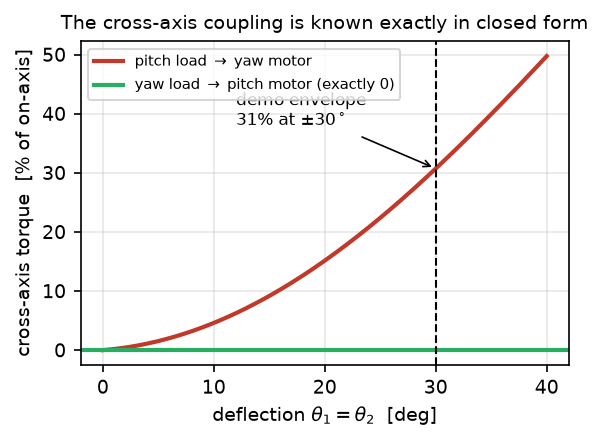

Protocol and data for the statics of Sec. III-B
The wrist's statics (full derivation) is upper-triangular: \[ \tau_1 = M_1 + M_2\,\frac{\partial q_2}{\partial\theta_1}, \qquad \tau_2 = M_2\,\frac{\partial q_2}{\partial\theta_2}, \] where \(M_1, M_2\) are the moment components about the yaw and pitch output axes. It predicts that a yaw moment never reaches the pitch actuator, and that a pitch moment reflects onto the yaw actuator with the closed-form gain \(\rho=(\partial q_2/\partial\theta_1)/(\partial q_2/\partial\theta_2)\), which is zero on \(\theta_2=0\), at most \(6\%\) along \(\theta_1=0\), and \(31\%\) at \((30^\circ,30^\circ)\). We measure both channels on a bench rig below.

Predicted cross-axis torque along the diagonal \(\theta_1=\theta_2\). The pitch-load → yaw-motor coupling reaches \(31\%\) of the on-axis torque at \(\pm 30^\circ\) and \(50\%\) at \(40^\circ\); the yaw-load → pitch-motor channel is zero at every configuration. Because the gain is closed-form, it is exactly compensable.
A weighed \(1.145\) kg mass hangs from a bar clamped to the output, at three radii (\(85/117/150\) mm), on both bar ends, on each output axis in turn, while the opposite actuator's torque is read. Poses span a two-dimensional grid plus a \((0,0)\) control pose. Differencing the two bar ends cancels sensor bias, bar weight, and on-axis stiction; entering every pose from both directions and averaging cancels static friction, which acts against the last commanded motion rather than against the load. Each motor is calibrated from its own differenced on-axis load ladder; both calibrate at \(0.96\). Because the joint sags up to \(1.6^\circ\) under load, predictions are evaluated at each group's measured pose.
Torque on the pitch motor, as a percentage of the applied moment:
| Pose \((\theta_1,\theta_2)\) | Predicted | Measured |
|---|---|---|
| \((0,0)\) — control | \(0.0\%\) | \(+0.6\%\) |
| \((-30,-20)\) | \(0.0\%\) | \(+0.6\%\) |
| \((-30,+20)\) | \(0.0\%\) | \(+2.7\%\) |
| \((-20,-30)\) | \(0.0\%\) | \(-0.1\%\) |
| \((-20,+30)\) | \(0.0\%\) | \(+0.1\%\) |
| \((-30,-30)\) | \(0.0\%\) | \(+4.8\%\) |
| \((-30,+30)\) | \(0.0\%\) | \(-1.6\%\) |
The null holds: \(2.2\) percentage points RMS, at the fixture noise floor. The absolute leak at the control pose is \(0.002\)–\(0.007\) N·m, at the sensor noise floor.
Torque on the yaw motor, as a percentage of the applied moment:
| Pose \((\theta_1,\theta_2)\) | Predicted | Measured |
|---|---|---|
| \((0,0)\) — control | \(0.0\%\) | \(+3.2\%\) |
| \((-30,-20)\) | \(-6.8\%\) | \(-7.0\%\) |
| \((-30,+20)\) | \(+6.6\%\) | \(+5.7\%\) |
| \((-20,-30)\) | \(-10.2\%\) | \(-15.6\%\) |
| \((-20,+30)\) | \(+10.1\%\) | \(+17.1\%\) |
| \((-30,-30)\) | \(-15.2\%\) | \(-10.2\%\) |
| \((-30,+30)\) | \(+15.1\%\) | \(+15.1\%\) |
The coupling appears with the predicted sign and \(\theta_2\)-parity at every pose. A raw pose-by-pose regression of measured against predicted coupling gives measured \(=1.06\times\) predicted (\(r=+0.95\)). The pose set is symmetric in \(\theta_2\) and the predicted coupling is odd in \(\theta_2\), so the combination \(\big(C(+\theta_2)-C(-\theta_2)\big)/2\) restricts the estimate to that odd component, isolating it from anything additive or even, such as sensor bias, bar-azimuth leak, or a one-signed friction residue. This estimator gives measured \(=0.96\times\) predicted (\(r=+0.89\)), the aggregate figure quoted in Sec. III-B, with the coupling growing with lever arm exactly as predicted:
| Pose pair | \(L=85\) mm | \(L=117\) mm | \(L=150\) mm | Predicted @ 150 mm |
|---|---|---|---|---|
| \((-30,\pm 20)\) | \(-0.038\) | \(-0.057\) | \(-0.078\) | \(-0.096\) N·m |
| \((-30,\pm 30)\) | \(-0.093\) | \(-0.126\) | \(-0.162\) | \(-0.193\) N·m |
| \((-20,\pm 30)\) | \(-0.076\) | \(-0.124\) | \(-0.172\) | \(-0.139\) N·m |
Across both channels and all nine rung-pairs, the worst residual against \(\boldsymbol{\tau}=J^{\top}\mathbf{m}\) is \(0.044\) N·m \(=1.2\%\) of the \(3.75\) N·m rating and \(7.5\times\) below the wrist's \(0.33\) N·m backdrive friction. After the closed-form compensation, the backdrive friction, not cross-axis coupling, sets the limit on torque attribution for this hardware.
Measured friction sets that floor: breakaway is \(0.107\)–\(0.188\) N·m on yaw and \(0.072\)–\(0.089\) N·m on pitch, and the variation between visits to a pose leaves a \(0.02\)–\(0.04\) N·m residual after two-approach averaging. Poses are motor-side; a residual \(1^\circ\) output-pose error moves the predicted coupling by \(\le 1.2\) percentage points.
Verifies the statics stated in Sec. III-B and derived on the kinematics & statics page. Back to the project page.